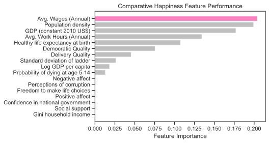
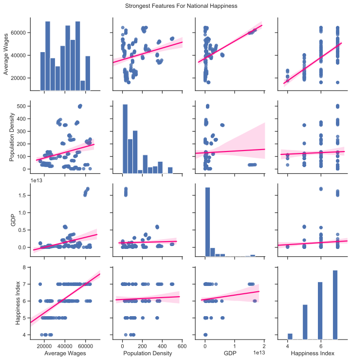
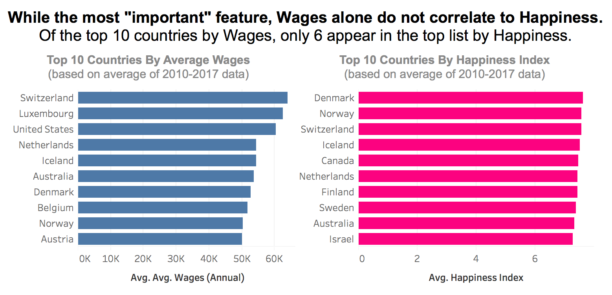

Scott Gregory
Machine Learning Model Featured: Random Forests
Project Python Libraries: Pandas | Scikit-learn | Matplotlib & Seaborn
Hypothesis
I predicted that economic variables would be the most important features impacting happiness. I thought social variables would also rank high in importance.
Model Details & Objectives
Random Forests is an ensemble, supervised learning algorithm helpful in identifying which variables are most predictive when dealing with several features. It works by permuting through a random sample of decision trees from the features, and aggregating the results while avoiding overfitting. We wanted to narrow our long list of variables to two or three that were most important. Random Forests returns the feature importance score for each of our variables, making that easy to do.
Data Cleaning
Given the limited number of countries, we needed to create a more robust data set to produce a meaningful result. To do this, as part of our ETL, we combined data from each country for years 2010-2017. We removed year and country information from the dataset, leaving only the variable information and target happiness index. We also dropped nulls, changed data types, and renamed variables for greater accuracy and to simplify visualizations.
Data Analysis
Random Forests Scores
Pairplot For Strongest Features
Wages vs. Happiness
Conclusion
Random Forests proved to be a relatively easy way to get a baseline ranking of feature importance from our set of variables.
The model indicates that all of our features together score a 0.815, a strong prediction of happiness.
“Average Wages” was most important feature in predicting happiness (0.209), followed by “Population Density” (0.207) and “GDP" (0.201). When we ran these top three variables through a second Random Forests model, the collective score was 0.777. Surprisingly, social variables like “Social Support” and “Freedom To Make Life Choices” appeared to carry very little importance.
We have since learned that strong inter-variable correlation can skew the model, meaning it is better for the variables to be unrelated to one another. We can see from our pair plot that there is a strong correlation between at least two of our variables (GDP and Wages) so that may be impacting our results. If we were to run this again, we would be more mindful of that upfront in feature selection, perhaps running regression analysis between various economic variables, social variables, etc. before confirming our final list of features to train and test.
GitHub Code
Happiness Project: Happiness Project: Random Forests (All Variables)